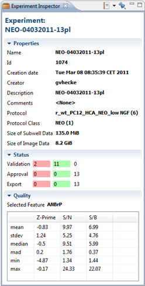

The Experiment Inspector shows additional information about the currently selected experiment. The information is divided in 3 categories:
- Properties
- Name: The name of the experiment
- Id: The id of the experiment
- Creator: The name of the creator of this experiment
- Description: A description for the experiment
- Comments: Comments about the experiment
- Protocol: The protocol that is used in this experiment
- Protocol Class: the protocol class that is used in this experiment
- Size of Subwell Data: The size of all the subwell data on the server
- Size of Image Data: The size of the image data on the server
- Status: The status of the plates in this experiment.
- Red: The number of rejected plates
- Green: The number of accepted plates
- White: The number of neutral (not accepted, nor rejected)
- Quality: Statistics about the experiment for the currently selected feature.
- Columns: Z-Prime, S/N, S/B
- Rows: mean, stdev, median, mad, min and max
To open the Experiment Inspector, right-click on an experiment and select Inspectors > Experiment Inspector.

These are the available options in this view:
| Open or create a Saved View or Report. | |
| Pin (freeze) the view so its contents will not change when another experiment is selected. |